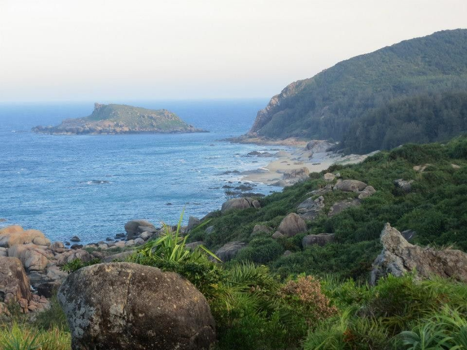
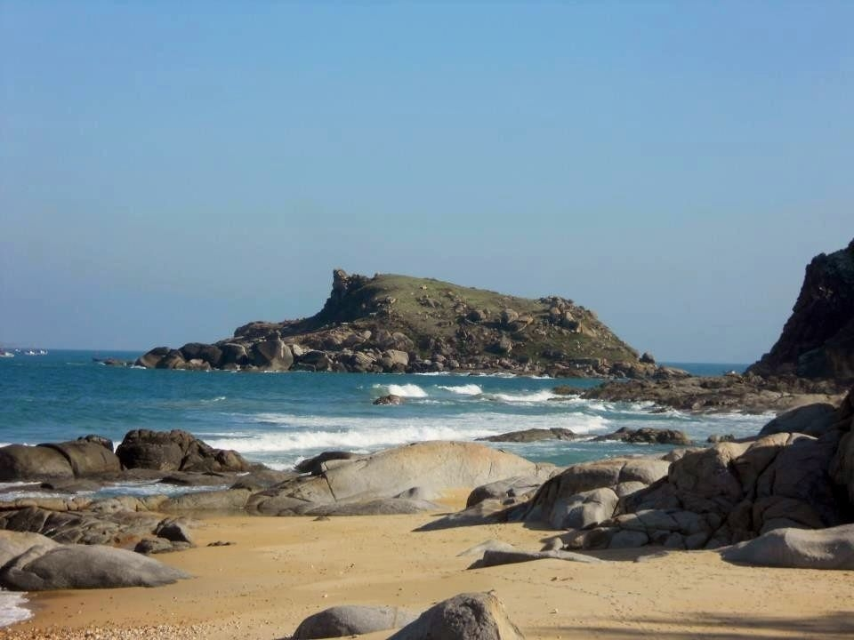
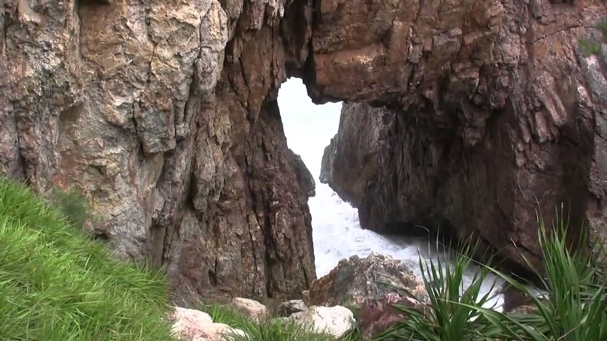

 Thị trấn Phù Mỹ, Bình Định vốn nổi tiếng hoang sơ thiên mộng với những danh thắng cảnh như: chùa Hang, Giếng Tiên, và di tích lịch sử Đèo Nhông - Dương Liễu, và một vùng biển đẹp nổi cộm phía đông kéo dài từ Vĩnh Lợi (Mỹ Thành) đến cửa tấn Hà Ra (Mỹ Đức). Ít ai biết, trong vùng biển này lại có một thắng cảnh tuyệt mỹ - Mũi Vi Rồng. Nằm cách thị trấn Phù Mỹ khoảng 20 km về hướng Đông, Mũi Vi Rồng, hay còn gọi là: Mũi Rồng, là ngọn núi có hình dáng trông như một con rồng khổng lồ được thiên nhiên chạm trổ và điêu khắc.
 Mũi Vi Rồng thuộc thôn Tân Phụng, du khách tìm đến để tận hưởng trời xanh mây trắng, nắng vàng, cùng bãi cát trắng trải dài và cảnh núi non tươi đẹp. Đặc biệt, người ta còn thường xuyên tổ chức lễ hội cầu ngư ở Mũi Vi Rồng hằng năm. Lễ hội thường diễn ra từ ngày 01 đến ngày 04 tháng 5 (nhằm ngày 11 đến ngày 14 tháng 4 âm lịch), với những hoạt động thể thao dưới nước thú vị: Đua thuyền, Chèo hầu, và hát bội tại Lăng Ông Nam Hải.
 Non nước Mũi Vi Rồng là một sự kết hợp tuyệt vời của tạo hóa: phía trên là vách đá sừng sững với những cây dứa, cây gai... mọc vững chắc; phía dưới là một vực sâu với những tiếng sóng vỗ rì rào, nhìn xa xa về phía Đông là những đoàn thuyền đánh cá căng buồm cùng gió khơi. Ngang giữa núi là con đường mòn trông có vẻ hiểm trở nhưng là lối đi dẫn đến bãi Ngang và Hòn Tranh.
Project 4 - Môn xây dựng website đầu tiên (WEB101x)
Họ tên: Nguyễn Anh Tuân
MSSV: FX00336